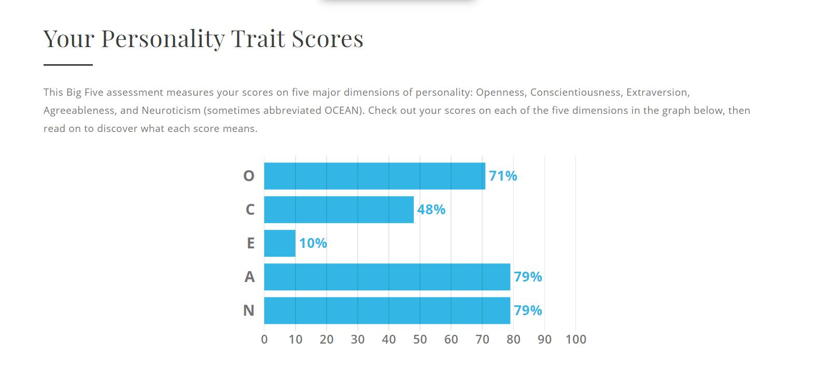

Duong Tuan Nghia (s3818269):
Hi, I am Nghia, a Vietnamese currently studying at RMIT University Vietnam. My student ID is s3818269 and my email is s3818269@rmit.edu.vn. At present, I have a part time job as an English tutor for some primary and secondary school students. In my free time, I usually read novels, play computer games or watch films. My favorite genre of movies is horror, especially films from Asian countries such as Japan and Korea. I also love dogs, especially pugs. My IT interest came from the movie named Hackers, which I found very amazing and inspiring. Currently I only know a little about MySQL and Python, which I learnt from RMIT. Our group chose the name “Beginner Guys” because we are freshmen of IT field and we still have a lot of knowledge to learn and experience.
Team profile:
The result of Myers - Briggs Types Indicator test shows that I will focus more on internal thoughts, moods and feelings rather than on external sources of stimulation. I also have some plans for the future, but they can be influenced by the suddenly changed feelings and other people’s criticism. These can heavily affected to my behavior in a team.
The result of Learning style test shows that I am good at learning through hands - on experience and watching other people’s work. By doing work repeatedly, I can gain experience from mistakes and be better. On the other hands, my least preferred learning style is auditory. This can be very bad when working in a team. I can easily miss some important information when the team leader announces the working schedule or discusses about the working plan.
The result of Big Five Personality test shows that I am an abstract thinker, a flexible but easily sidetracked person. According to the result, I am also trustworthy, helpful and vulnerable to stress. In a team, I can make a working plan clearly and help other team members with their works. But when works do not go as plan, I am often stress out myself and then I make mistakes.
Compare to my ideal job, Anh Tuan’s one, which is iOS developer, has one common. Our role is to focus one specific project or stage in whole development life cycle and determine how to best build software. The difference between our job is the programming language and the environment we will create the application on. For Tuan, he will concentrate on C, C++ coding language and mobile field, while I will use Javascript and SQL database and my program will run on computer environment.
Group’s website: https://s3818269.github.io/ITWorld
Group’s Git repository: https://github.com/s3818269/ITWorld
My ideal job that I chose is Software Developer, which is about analyzing the given tasks and then coming up with the solutions. From the 2018 chart, it is crystal clear that it is not the most demanding job that business companies want to hire.
The general skills which Application Developer needs to have are communication skills, problem - solving skills, team work and creativity. From the chart below, communication skills are in first rank because the Architect needs to talk to the clients as well as co-workers to gain information and ideas. Problem - solving skills rank second and creativity rank ninth because the job requirement is to create the solutions for customers. Team work also has high rank due to in real life, people have to work with each other to finish the given goals. There are 3 high - ranked skills that are not in my required skills, which are organisation skills, writing and troubleshooting.

The IT - specific skills that are in my required ones are SQL, Javascript and Microsoft Windows. SQL and Javascript are perspectively ranked first and second due to the job requirement. Microsoft Windows has high rank in the chart because in most of the time, the application will run on the Windows OS. There are 3 high - ranked skills that are not in my required skills, which are JAVA, project management and SAP.
After looking at the Burning Glass data, I decided to change my ideal job to Solution Architect because of its similarity in job description and tasks. Moreover, in recent years, there are too many people learning Software Engineer and still do not have a job, which means the hiring needs are not high.
Mosh Hamedani is a software engineer with 20 years of professional experience and he has taught millions of people how to code through his Youtube channel and online courses. Because of that, he mostly interact with the general public and viewers to gain their opinions and improve the videos. Most of his time, he works at home and make videos about coding knowledge, as well as providing online courses to learners. I think the most challenging aspect of his position is to provide clear and easy - to - understand knowledge to the viewers about programming language.
https://www.youtube.com/watch?v=_uQrJ0TkZlc&t=8070s
https://www.youtube.com/watch?v=7S_tz1z_5bA
Joma have worked as a data science and software engineer in various Silicon Valley companies. Currently he mainly upload Youtube videos about life in Silicon Valley working in tech and educational knowledge about data science of software engineering. When he works in Silicon Valley, he usually discuss his ideas with the co - workers as well as check the code on his laptop. Most of his time, he works with his partners in a cafeteria in order to talk about work progress. The most challenging aspect of his job is to find the solution for the given tasks and try to optimize the code.
https://www.youtube.com/watch?v=hWFDujYzvbI
https://www.youtube.com/watch?v=Ck0ozfJV9-g
Cybersecurity
The Internet has become an inseperatable part of current life, from communicating through Facebook and emails to storing large amount of information on Apps such as Google Drive. And with the growing use of the Internet, protecting own computers and important data have become necessary. A computer without approriate security standards is easily by viruses and then all information can be stolen in moments. Every day, there are thousands of malicious websites that are created in order to deceive people to enter, which allows hackers to gain illegal acces to the computer systems. There are some kinds of cybersecurity threats, for instance phishing, ransomware and malware. Phishing is the practice of sending fake emails in order to steal sensitive data such as credit card numbers and password, which is the most common type of cyber attack. Ransomware is the type of malicious software that is used to block access to computer systems or files. The infected computer’s owners have to pay a certain amount of money to the hackers in order to get a key to decrypt the software, and it is not guaranteed that paying the ransomware will make the files or systems restored. Malware is the type of software that inject certain kinds of viruses to gain illegal access and cause damage to the computer. These cyber attacks can negatively affect to people’s lives that range from minor inconvenience to serious incidents, such as losing confidential data or get financial problems. Therefore, it is crucial that cybersecurity is an essential standard in protecting and preventing personal information from being taken and used unapproriately. Cybersecurity or IT security is defined as all operations and activities that are used to minimize any kind of threats and vulnerabilities, as well as enforcing the mechanisms and processes that protect digital equipment and data. In the current time, there are some counter measurements that can protect own computers and personal data. Firstly is the firewall, a computer mechanism that controls the access of files from one network to the computer’s one. The firewall can recognize any kinds of unwanted programs that are stored in the database and then warn users about the kinds of spyware, the impact of those softwares will cause to the computer systems. By turning the firewall on, users have protected themselves from downloading infected files and programs. Secondly is the anti - virus software. These programs are designed to locate and isolate the unwanted spywares, therefore prevent those malicious software from running and steal information, or causing damage to the computer systems. Currently on the market, there are a lot of famous companies that provide good anti - spyware programs, such as BitDefender, MalwareBytes, Avira. Apart from the traditional methods, there are also some advanced ways to protect the computers. Using virtual machine is one of those methods. By creating a separated and completely isolated operating system, users are safe to download and test various kinds of malicious programs and viruses, without worrying the illegal access to the important files inside the other operating system. As the number of softwares, the Internet access, as well as computer and mobile users are growing rapidly, so do the chances of cyber attacks and the techniques of doing the cyber crimes. People will be more aware of the danger of cyber attack and be more careful before clicking to any websites or links on the Internet. Therefore, in the near future, following with the increase of users’ awareness, it is obvious that the cybersecurity technology will develop at the remarkable speed in order to catch up with the needs of protecting personal information.
Due to the danger and consequences of cyber attack, cybersecurity has become necessary for individuals and families, as well as government organizations and business companies that collect and store on computers a wide range of confidential data from users. For families, protecting family members from cyber crimes has become incredibly important. Children are easy targets for thoses attacks because they do not have full awareness of malicious websites. There are many cases of children using parents’ digital devices to access infected web pages and then the family gets financial problems due to the personal information leakage. For an individual, protecting information that could affect life as well as personal finance data is essential. The internet provides a wide range of learning opportunities, but there are also risks. Photos, videos and other personal information uploaded by an individual on social networking sites such as Facebook, Instagram can be illegally used by hackers may lead to serious troubles. Recently, these sites have become the most popular places for sharing information and connecting with other people around the world. Along with the benefits. the social networking sites have also created opportunities for hackers to do the crimes. Therefore, it is important for users to understand how to protect themselves against cyber threats by using standard measurements and being aware of the danger of data leakage. One should learn how to protect own computers and personal data from being hacked and should have appropriate online behavior in order to minimize chances of cyber threats. The development of cybersecurity technology will create more jobs in the IT field due to the needs of securing data and computer systems of companies and organizations. The cyber attack towards these entities can create immeasurable loss of finance and reputation, which means those companies needs a large amount of human resources in the related field.
In daily life, I think learning more about the cybersecurity will help me a lot in the future. My future job will be involving in the IT field, which means my computer will contain many confidential data about the projects and clients. Leaking the data will not only give me troubles about working productivity but also the reputation of my company that I am working for and clients that they have trust on me. Therefore, it is important for me to set up counter measurements in order to prevent them. Currently, beside using firewall and anti - spyware application, I have also change my online behavior. In the past, I used to click on various kinds of websites without noticing the danger of viruses and spywares until I got ones into the computer systems. It was an extremely bad experience and it took a lot of time and effort to get rid of the viruses. Then I knew about the virtual machine and the advantages of using them while surfing the internet and downloading files. Since then I always use VMWare to set up the virtual environment on my computer before doing anything involving Internet. For me, it is a good habit to protect myself against the cyber attacks which happens every day. Having full awareness of the danger of personal information leakage also help my family members to use the Internet safer. My father works in a big company but he does not know much about the technology, so his laptop contains many files about the contracts and working plans. He is aware of the cyber crimes, therefore he asks me some advises about protecting his laptop and have installed an anti - virus software. Overall, cybersecurity is an essential way that everyone should learn at least the basic concepts in order to protect own digital device from cyber threats from the Internet.
In game project “The Returners”, player’s goal is to find out the villain who has destroyed his village and bring him to justice. This project will be a Role - playing game, with big talent tree, good combat system, various kinds of weapons, magic and armor. The game takes place in a fantasy world called Eredia, where there are many races live together. In the game, the player will start as a young man who has lost everything after the tragedy happens at where he lives. On his adventure, he will eventually find companions who assist him to fight monsters and enemies.
When you start the game, you will have to make your own a character. In this stage, there are many customization for you to take into consideration. Firstly is your character’s face, there are some details you can change such as eyes, nose, scars and hair. After that, you have to choose the race of your character. It can be a Dwarf with high strength attribute but lacks of dexterity, or an Elf with mobility and high accuracy. You can also choose Human race with average attribute or Godlike with high Will attribute, which is important if you want to be a wizard. Next is the class/job choice. There are 8 classes in total, which were barbarian, wizard, monk, rogue, ranger, paladin, fighter, chanter. Each class has its own talent tree as well as skill tree. After this, you press complete button to finish the customization and now you are ready for the adventure. Like any Role - playing games, your character has health bar and action point. If your health is zero, you will lose the game. Each skill uses different amount of action points, so it is a good strategy to use the skills wisely. You will use weapons and skills to fight with the monsters and other villains. The enemies will drop some gold and items after being defeated, when help you become stronger. Every time you defeat enemies, you will receive a proportion of experience, so that when you gain a level, you can access to more powerful attacks. Throughout the game, eventually you will find and make friends with some Non - player characters, who will follow and assist you during the adventure. The world of Eredia is islands and seas, therefore you will need a ship with the crews. In this game, because you will travel by ship, voyages play an important role that can affect the storyline. You will also have to manage to resources of your ship, such as food, drinks and morale of the crew. The morale affects heavily to gameplay of the game. If the morale is low, the crew will fight poorly against the pirates. When it is under a certain threshold, there will be even riots. There is a variety of food and drinks in the game, which will boost the morale. You can also gain money from having naval fights with pirates or other ships, which you can buy better food, drinks or upgrades for your ship. If you have a lot of money, you can even buy a bigger ship, which means it will need more crew, resources to maintain. In the game, aside from main quest, there are many side ones that you can do, some of them will reward valuable resources, such as items, crew and companions. During the adventure, there are events that will influence to the storyline. Depending on how you choose, your companion might leave or even be against with you, which might lead to different endings.
The biggest problems that I will encounter during this project is my lack of knowledge and experience in game developing field and a large amount of human resources to be work with. It will also take a lot of time and effort to discuss ideas, do the graphic design, write programs and debug errors.
Duong Tuan Nghia (s3818269):
The week 8 and week 9 is very bad for me since I have to go to the hospital because of food poisoning. The Wifi in my room is always unavailable so during that time, I can only do the profile part, IT industry and IT work. It was very hard since there is no Internet connection to find good information. It was also my fault for not taking my team members’ phone number to contact with them. About Le Anh Tuan, he has distributed the work between 3 people fairly and I think he is a responsible person. For Le Tuan Kiet, I did not know much about him since the last group meeting discussing about the assignment.
Duong Tuan Nghia (s3818269):
About the Assignment 2, the only thing that went well for me is that I did try my best to finish my work. The food poisoning incident made my performance for assignment a bad experience as it was the first group project. Therefore, I think my communication skills and teamwork need to be improved a lot. One thing made me surprised is that I was able to finish the IT technology part in a short time. One thing that I have learned about groups is that we need to communicate more in order to know the group progression.